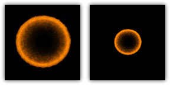
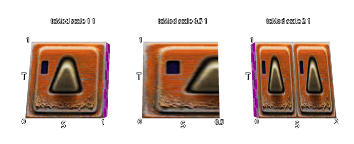

Stage specifications only affect rendering. Changing any directives or values within a stage will usually take effect as soon as a vid_restart is executed. Q3Map2 ignores stage directives entirely.
A stage can specify a texture map, a color function, an alpha function, a texture coordinate function, a blend function, and a few other rasterization options.
Specifies the source texture map (a 24 or 32-bit TGA or JPG file) used for this stage. The texture may or may not contain alpha channel information. The special keywords $lightmap and $whiteimage may be substituted in lieu of an actual texture map name. In those cases, the texture named in the first line of the shader becomes the texture that supplies the light mapping data for the process. The texture name should always end with the ".tga" suffix regardless of whether the source texture map is actually a .tga file or .jpg.
This is the overall lightmap for the game world. It is calculated during the Q3Map2 process. It is the initial color data found in the framebuffer. Note: due to the use of overbright bits in light calculation, the keyword rgbGen identity must accompany all $lightmap instructions.
This is used for specular lighting on MD3 models. This is a white image generated internally by the game. This image can be used in lieu of $lightmap or an actual texture map if, for example, you wish for the vertex colors to come through unaltered.
Dictates that this stage should clamp texture coordinates instead of wrapping them. During a stretch function, the area, which the texture must cover during a wave cycle, enlarges and decreases. Instead of repeating a texture multiple times during enlargement (or seeing only a portion of the texture during shrinking) the texture dimensions increase or contract accordingly. This is only relevant when using something like deformTexCoordParms to stretch/compress texture coordinates for a specific special effect. Remember that the Quake III Arena engine normalizes all texture coordinates (regardless of actual texture size) into a scale of 0.0 to 1.0.
When using clampMap make sure the texture is properly aligned on the brush. The clampMap function keeps the image from tiling. However, the editor doesn't represent this properly and shows a tiled image. Therefore, what appears to be the correct position may be offset. This is very apparent on anything with a tcMod rotate and clampMap function.
Avoiding Distortion: When seen at a given distance (which can vary, depending on hardware and the size of the texture), the compression phase of a stretch function will cause a "cross"-like visual artifact to form on the modified texture due to the way that textures are reduced. This occurs because the texture undergoing modification lacks sufficient "empty space" around the displayed (non-black) part of the texture (see below, left). To compensate for this, make the non-zero portion of the texture substantially smaller (50% of maximum stretched size -- see below, right) than the dimensions of the texture. Then, write a scaling function (tcMod scale) into the appropriate shader phase, to enlarge the image to the desired proportion.

The shaders for the bouncy pads (in the sfx.shader file) show the stretch function in use, including the scaling of the stretched texture:
textures/sfx/metalbridge06_bounce
{
//q3map_surfacelight 2000
surfaceparm nodamage
q3map_lightimage textures/sfx/jumppadsmall.tga
q3map_surfacelight 400
{
map textures/sfx/metalbridge06_bounce.tga
rgbGen identity
}
{
map $lightmap
rgbGen identity
blendfunc gl_dst_color gl_zero
}
{
map textures/sfx/bouncepad01b_layer1.tga
blendfunc gl_one gl_one
rgbGen wave sin .5 .5 0 1.5
}
{
clampmap textures/sfx/jumppadsmall.tga
blendfunc gl_one gl_one
tcMod stretch sin 1.2 .8 0 1.5
rgbGen wave square .5 .5 .25 1.5
}
// END
}
The surfaces in the game can be animated by displaying a sequence of 1 to 8 frames (separate texture maps). These animations are affected by other keyword effects in the same and later shader stages.
Example:
animMap 0.5 textures/sfx/b_flame1.tga textures/sfx/b_flame2.tga textures/sfx/b_flame3.tga textures/sfx/b_flame4.tga would be a 4 frame animated sequence. Each frame would be displayed for 2 second before the next one is displayed. Whole cycle length would be 8 seconds. The cycle repeats after the last frame in sequence shown.
textures/sfx/flameanim_blue
{
// ***********************************************
// * Blue Flame *
// * July 20, 1999 Surface Light 1800 *
// * Please Comment Changes *
// ***********************************************
qer_editorimage textures/sfx/b_flame7.tga
q3map_lightimage textures/sfx/b_flame7.tga
surfaceparm trans
surfaceparm nomarks
surfaceparm nolightmap
cull none
q3map_surfacelight 1800
// texture changed to blue flame.... PAJ
{
animMap 10 textures/sfx/b_flame1.tga textures/sfx/b_flame2.tga
textures/sfx/b_flame3.tga textures/sfx/b_flame4.tga
textures/sfx/b_flame5.tga textures/sfx/b_flame6.tga
textures/sfx/b_flame7.tga textures/sfx/b_flame8.tga
blendFunc GL_ONE GL_ONE
rgbGen wave inverseSawtooth 0 1 0 10
}
{
animMap 10 textures/sfx/b_flame2.tga textures/sfx/b_flame3.tga
textures/sfx/b_flame4.tga textures/sfx/b_flame5.tga
textures/sfx/b_flame6.tga textures/sfx/b_flame7.tga
textures/sfx/b_flame8.tga textures/sfx/b_flame1.tga
blendFunc GL_ONE GL_ONE
rgbGen wave sawtooth 0 1 0 10
}
{
map textures/sfx/b_flameball.tga
blendFunc GL_ONE GL_ONE
rgbGen wave sin .6 .2 0 .6
}
}
Design Notes:
To make a texture image appear for an unequal (longer) amount of time (compared to other frames), repeat that frame more than once in the sequence.
Surfaces marked with a shader containing this directive in one of its stages will display an animated video playing in a continuous loop. The video clip must be in ROQ format and playing at 30 frames per second. The ROQ file is stored in the "video" directory within the main mod directory. A third-party program is required to convert other video formats to the ROQ format for use within Quake III engine games.
textures/obsidian_video/intro
{
qer_editorImage textures/obsidian_video/qer_intro.tga
surfaceparm nolightmap
{
videoMap obsidian_intro.roq
rgbGen identity
}
}
Historical Information:
The ROQ format is a proprietary video format developed by Graeme Devine originally used for "The 7th Guest" for the purpose of being able to decompress quickly while maintaining high image quality. It was later adopted by Id Software for use in Quake III Arena.
Blend functions are the keyword commands that tell the Quake III Arena graphic engine's renderer how graphic layers are to be mixed together.
The most common blend functions are set up here as simple commands, and should be used unless you really know what you are doing.
Getting a handle on this concept is absolutely key to understanding all shader manipulation of graphics.
blendFunc or "Blend Function" is the equation at the core of processing shader graphics. The formula reads as follows:
[source * (srcBlend)] + [destination * (dstBlend)]
Source is usually the RGB color data in a texture TGA file (remember it's all numbers) modified by any rgbGen and alphaGen. In the shader, the source is generally identified by command map, followed by the name of the image.
Destination is the color data currently existing in the frame buffer.
Rather than think of the entire texture as a whole, it maybe easier to think of the number values that correspond to a single pixel, because that is essentially what the computer is processing... one pixel of the bitmap at a time.
The process for calculating the final look of a texture in place in the game world begins with the precalculated lightmap for the area where the texture will be located. This data is in the frame buffer. That is to say, it is the initial data in the destination. In an unmanipulated texture (i.e. one without a special shader script), color information from the texture is combined with the lightmap. In a shader-modified texture, the $lightmap stage must be present for the lightmap to be included in the calculation of the final texture appearance.
Each pass or "stage" of blending is combined (in a cumulative manner) with the color data passed onto it by the previous stage. How that data combines together depends on the values chosen for the source blends and destination blends at each stage. Remember it's numbers that are being mathematically combined together that are ultimately interpreted as colors.
A general rule is that any source blend other than GL_ONE (or GL_SRC_ALPHA where the alpha channel is entirely white) will cause the source to become darker.
The following values are valid for the source blend part of the equation.
The following values are valid for the destination blend part of the equation.
The product of the source side of the equation is added to the product of the destination side of the equation. The sum is then placed into the frame buffer to become the destination information for the next stage. Ultimately, the equation creates a modified color value that is used by other functions to define what happens in the texture when it is displayed in the game world.
If no blendFunc is specified then no blending will take place. A warning is generated if any stage after the first stage does not have a blendFunc specified.
The Riva 128 graphics card supports ONLY the following blendmodes:
Cards running in 16 bit color cannot use any GL_DST_ALPHA blends.
There are two color sources for any given shader, the texture file and the vertex colors. Output at any given time will be equal to TEXTURE multiplied by VERTEXCOLOR. Most of the time VERTEXCOLOR will default to white (which is a normalized value of 1.0), so output will be TEXTURE (this usually lands in the Source side of the shader equation). Sometimes you do the opposite and use TEXTURE = WHITE, but this is only commonly used when doing specular lighting on entities (i.e. shaders that level designers will probably never create.
The most common reason to use rgbGen is to pulsate something. This means that the VERTEXCOLOR will oscillate between two values, and that value will be multiplied (darkening) the texture.
If no rgbGen is specified, either "identityLighting" or "identity" will be selected, depending on which blend modes are used.
Colors are assumed to be all white (1.0, 1.0, 1.0). All filters stages (lightmaps, etc) will get this by default.
Colors will be (1.0, 1.0, 1.0) if running without overbright bits (NT, Linux, windowed modes), or (0.5, 0.5, 0.5) if running with overbright. Overbright allows a greater color range at the expense of a loss of precision. Additive and blended stages will get this by default.
Colors are filled in directly by the data from the map or model files. Use rgbGen vertex + alphaGen const or rgbGen exactVertex to disable surfaces from being affected by alphaMod volumes.
Design Notes:
rgbGen vertex should be used when you want the RGB values to be computed for a static model (i.e. mapobject) in the world using precomputed static lighting from Q3BSP. This would be used on things like the gargoyles, the portal frame, skulls, and other decorative models put into the Quake III Arena world.
As rgbGen vertex, but inverted. This keyword would probably not be used by a level designer.
Like vertex, except vertex ignores overbrightbits. Engine uses this mode in default shaders for vertexlit surfaces. Generally brighter under default settings.
Colors are grabbed from the entity's modulate field. This is used for things like explosions. This keyword would probably not be used by a level designer.
As rgbGen entity, but inverted.
Colors are computed using a standard diffuse lighting equation. It uses the vertex normals to illuminate the object correctly.
Design Notes:
rgbGen lightingDiffuse is used when you want the RGB values to be computed for a dynamic model (i.e. non-map object) in the world using regular in-game lighting. For example, you would specify on shaders for items, characters, weapons, etc.
Colors are generated using the specified waveform. An affected texture will become darker and lighter, but will not change hue. Hue stays constant. Note that the RGB values for color will not go below 0 (black) or above 1 (white). Valid waveforms are sin, triangle, square, sawtooth, inversesawtooth and noise (see Waveform Functions).
A constant vertex colour is assigned to the affected surface. This modifies the hue of the texture.
The alpha channel can be specified like the RGB channels. If not specified, it defaults to 1.0.
A constant vertex alpha is assigned to the affected surface. This modifies the transparency of the texture.
This rendering stage keyword is used in conjunction with the surface parameter keyword portal. The function accomplishes the "fade" that causes the scene in the portal to fade from view. Specifically, it means "Generate alpha values based on the distance from the viewer to the portal." Use alphaGen portal on the last rendering pass.
Specifies how texture coordinates are generated and where they come from. Valid functions are base, lightmap, environment and vector.
New texture coordinate generation by world projection. This allows you to project a texture onto a surface in a fixed way, regardless of its orientation.
S-coordinates correspond to the "x" coordinates on the texture itself. T-coordinates correspond to the "y" coordinates on the texture itself. The measurements are in game units.
Example:
tcGen vector ( 0.01 0 0 ) ( 0 0.01 0 )
This would project a texture with a repeat every 100 units across the X/Y plane. The value comes from dividing the game units from 1, in this case, 1/100.
Specifies how texture coordinates are modified after they are generated. The valid functions for tcMod are rotate, scale, scroll, stretch, transform and turb. Transform is a function generally reserved for use by programmers who suggest that designers leave it alone. When using multiple tcMod functions during a stage, place the scroll command last in order, because it performs a mod operation to save precision, and that can disturb other operations. Texture coordinates are modified in the order in which tcMods are specified. In otherwords, if you see the following, the texture coordinates will be scaled, then scrolled.
tcMod scale 0.5 0.5 tcMod scroll 1 1
This keyword causes the texture coordinates to rotate. The value is expressed in degrees rotated each second. A positive value means clockwise rotation. A negative value means counterclockwise rotation. For example "tcMod rotate 5" would rotate texture coordinates 5 degrees each second in a clockwise direction. The texture rotates around the center point of the texture map, so you are rotating a texture with a single repetition, be careful to center it on the brush (unless off-center rotation is desired).
Resizes (enlarges or shrinks) the texture coordinates by multiplying them against the given factors of sScale and tScale. The values "s" and "t" conform to the "x" and "y" values (respectively) as they are found in the original texture. A positive value less than one will increase the size of the texture. A value greater than 1.0 will reduce the texture to a fraction of its size and cause it to repeat within the same area as the original texture (Note: see clampMap for ways to control this).
Scrolls the texture coordinates with the given speeds. The values "s" and "t" conform to the "x" and "y" values (respectively) as they are found in the original texture TGA. The scroll speed is measured in "textures" per second. A "texture" is the dimension of the texture being modified and includes any previous shader modifications to the original TGA). A negative s value would scroll the texture to the left. A negative t value would scroll the texture down.
Example: tcMod scroll 0.5 -0.5 moves the texture down and right (relative to the TGA files original coordinates) at the rate of a half texture each second of travel.
This should be the LAST tcMod in a stage. Otherwise there may be a popping or snapping visual effect in some shaders.
Stretches the texture coordinates with the given function. Stretching is defined as stretching the texture coordinate away from the texture center closest to the polygon center and then compressing it towards the center. (see Chapter 1: Key Concepts for waveform parameter definitions).
Transforms each texture coordinate as follows:
S' = s * m00 + t * m10 + t0 T' = s * m01 + t * m11 + t1
Essentially this is two rows of 3x3 matrix, which transforms 2D texture coordinate. Identity (no-transform) transform is:
tcMod transform 1 0 0 1 0 0
Applies turbulence to the texture coordinate. Turbulence is a back and forth churning and swirling effect on the texture.
This controls the depth comparison function used while rendering. The default is "lequal" (Less than or equal to) where any surface that is at the same depth or closer of an existing surface is drawn. This is used for textures with transparency or translucency. Under some circumstances you may wish to use "equal", e.g. for light-mapped grates that are alpha tested (it is also used for mirrors).
By default, writes to the depth buffer when depthFunc passes will happen for opaque surfaces and not for translucent surfaces. Blended surfaces can have the depth writes forced with this function.
This feature was not used in Quake III Arena maps, but still functions. Designates this stage as a detail texture stage, which means that if the c_var, r_detailtextures, is set to 0 then this stage will be ignored (detail will not be displayed). This keyword, by itself, does not affect rendering at all. If you do put in a detail texture, it has to conform to very specific rules. Specifically, the blendFunc:
blendFunc GL_DST_COLOR GL_SRC_COLOR
This is also the simple blend function: blendFunc filter
And the average intensity of the detail texture itself must be around 127.
Detail is used to blend fine pixel detail back into a base texture whose scale has been increased significantly. When detail is written into a set of stage instructions, it allows the stage to be disabled by the c_var console command setting "r_detailtextures 0".
A texture whose scale has been increased beyond a 1:1 ratio tends not to have very high frequency content. In other words, one texel can cover a lot of real estate. Frequency is also known as "detail." Lack of detail can appear acceptable if the player never has the opportunity to see the texture at close range. But seen close up, such textures look glaringly wrong within the sharp detail of the Quake III Arena environment. A detail texture solves this problem by taking a noisy "detail" pattern (a tiling texture that appears to have a great deal of surface roughness) and applying it to the base texture at a very densely packed scale (that is, reduced from its normal size). This is done programmatically in the shader, and does not require modification of the base texture. Note that if the detail texture is the same size and scale as the base texture that you may as well just add the detail directly to the base texture. The theory is that the detail texture's scale will be so high compared to the base texture (e.g.; 9 detail texels fitting into 1 base texel) that it is literally impossible to fit that detail into the base texture directly.
For this to work, the rules are as follows:
An example (non-existent) detail shader is as follows:
textures/bwhtest/foo
{
q3map_globalTexture //may be required when using tcMod scale in later stages
// draw the lightmap first
{
map $lightmap
rgbGen identity
}
// draw the base texture
{
map textures/castle/blocks11b.tga
blendFunc filter
}
// highly compressed detail texture
{
map textures/details/detail01.tga
blendFunc GL_DST_COLOR GL_SRC_COLOR //MUST BE USED
detail //allows detail shaders to be disabled
tcMod scale 9.1 9.2
}
}
Determines the alpha test function used when rendering this map. Valid values are GT0, LT128, and GE128. These correspond to "GREATER THAN 0", "LESS THAN 128", and "GREATER THAN OR EQUAL TO 128". This function is used when determining if a pixel should be written to the framebuffer. For example, if GT0 is specified, the only the portions of the texture map with corresponding alpha values greater than zero will be written to the framebuffer. By default alpha testing is disabled.
Both alpha testing and normal alpha blending can be used to get textures that have see-through parts. The difference is that alphaFunc is an all-or-nothing test, while blending smoothly blends between opaque and translucent at pixel edges. Alpha test can also be used with depthWrite, allowing other effects to be conditionally layered on top of just the opaque pixels by setting depthFunc to equal.